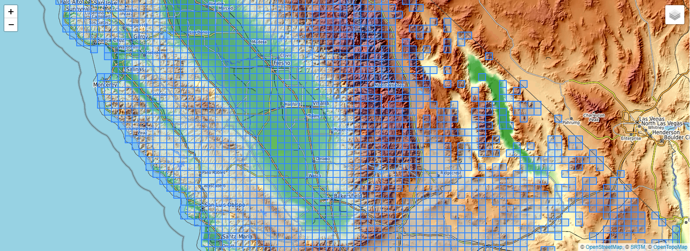
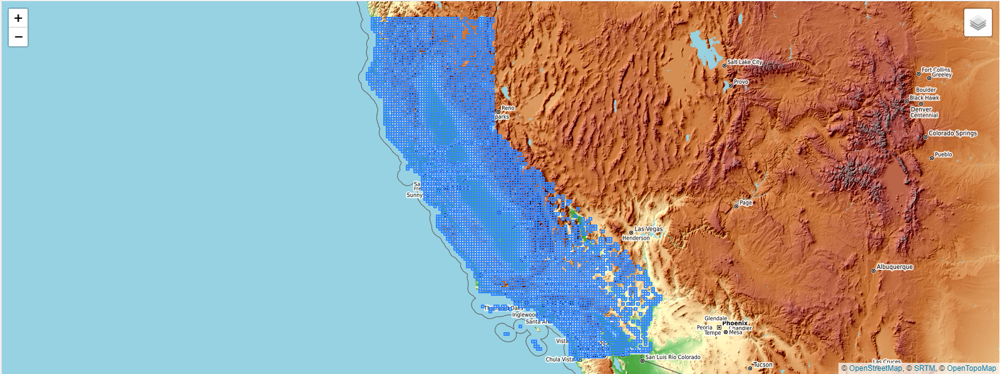
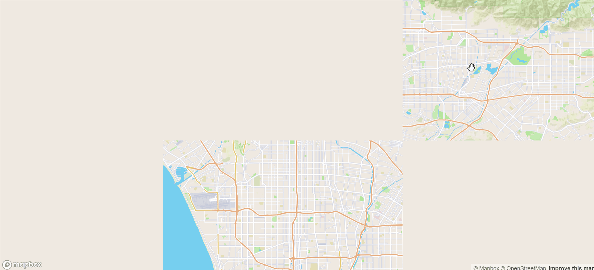
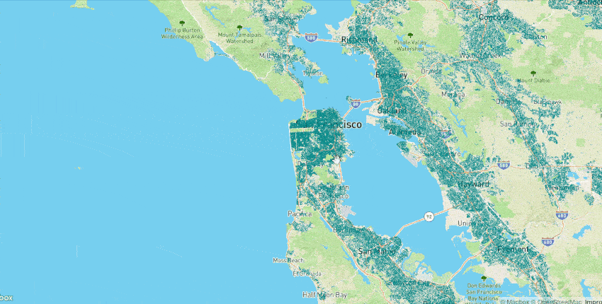
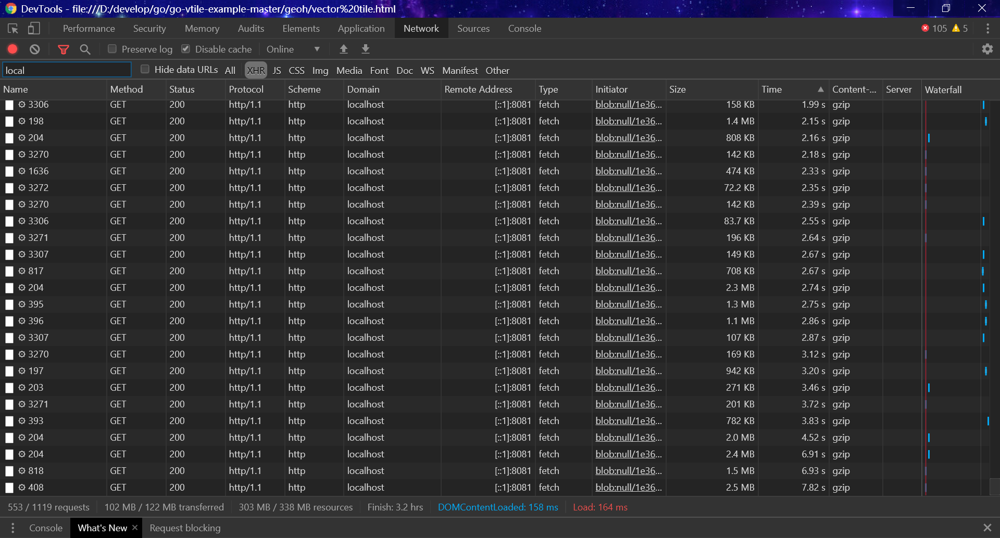

之前做的海量数据数据展示，在预处理速度和在线渲染上还有有所欠缺，本文中进行一些优化工作,使得九分钟处理完一千多万面数据的3-12级矢量切片，在线浏览数据请求时间控制在10s左右。
软件环境:PostGIS(3.0.0rc2 r17909)和 PostgreSQL( 12.0, compiled by Visual C++ build 1914, 64-bit)，数据是微软开源的部分房屋数据public.california20191107(10988317条)。
预处理就是将3级到12级的矢量切片事先切好。首先获取数据12级的最大最小xyz，通过这个范围生成网格，然后和数据相交得到一一对应的网格表public.ca_xyz 。
--经度转切片x
CREATE OR REPLACE FUNCTION lon2tile(lon DOUBLE PRECISION, zoom INTEGER)
RETURNS INTEGER AS
$BODY$
SELECT FLOOR( (lon + 180) / 360 * (1 << zoom) )::INTEGER;
$BODY$
LANGUAGE SQL IMMUTABLE;
--纬度转切片y
CREATE OR REPLACE FUNCTION lat2tile(lat double precision, zoom integer)
RETURNS integer AS
$BODY$
SELECT floor( (1.0 - ln(tan(radians(lat)) + 1.0 / cos(radians(lat))) / pi()) / 2.0 * (1 << zoom) )::integer;
$BODY$
LANGUAGE sql IMMUTABLE;
--xyz转几何
create or replace function TileBBox (z int, x int, y int, srid int = 3857)
returns geometry
language plpgsql immutable as
$func$
declare
max numeric := 20037508.34;
res numeric := (max*2)/(2^z);
bbox geometry;
begin
bbox := ST_MakeEnvelope(
-max + (x * res),
max - (y * res),
-max + (x * res) + res,
max - (y * res) - res,
3857
);
if srid = 3857 then
return bbox;
else
return ST_Transform(bbox, srid);
end if;
end;
$func$;
--数据最大最小经纬度计算最大最小xyz
select lat2tile(ST_Y((pt).geom),12) y, lon2tile(ST_X((pt).geom),12) x FROM (SELECT ST_DumpPoints(ST_Extent(geom)) AS pt from public.california20191107) as foo where (pt).path[2] in (1,3)
--网格表
CREATE TABLE public.ca_xyz ( x integer,y integer,z integer,id integer NOT NULL ) WITH (OIDS = FALSE) TABLESPACE pg_default;
--示例
insert into public.ca_xyz (id,z,x,y) select 1,3,1,3 from public.california20191107 where TileBBox(3,1,3,4326)&&geom limit 1

接下来就比较简单了，将quadkey生成3-11级xyz，把所有的xyz用来生成矢量切片。
--示例
SELECT ST_AsMVT(vt,'polygon',4096,'geo') tile FROM (SELECT ST_AsMVTGeom(geom,Box2D(TileBBox(3,1,3,4326)),4096,0,true) AS geo FROM public.california20191107 where TileBBox(3,1,3,4326)&&geom) AS vt 预处理矢量切片生成完以后，使用golang把矢量切片全部加载进程序中，并且建立键值对，能够快速的判断请求的xyz在3-12级是否有数据存在数据时能快速获取。当数据请求大于12级时候，我们使用数据库查询方式获取矢量切片。对于大于12级没有缓存的数据会判断是否是12级xyz的子级，如果是就会到数据库查询并缓存到程序中，如果不是就返回url无效减少数据库查询时间。


